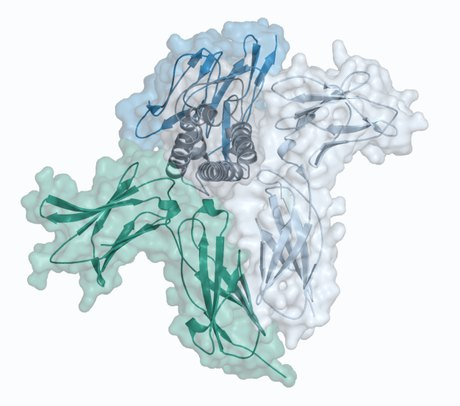
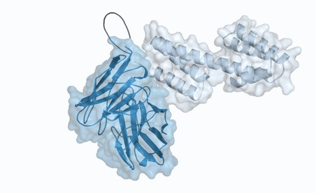
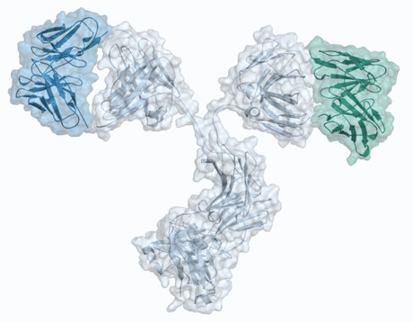

Research
Immunoengineering and protein design
I design and engineer proteins, mostly cytokines and antibodies, that send cleaner signals to the immune system. The thread running through my work is precision: getting a molecule to act on exactly the cells you want and leave the rest alone. Here are a few projects I've worked on. The full list of papers is on Google Scholar.
Conditionally active cytokine/antibody fusion proteins
IL-2 is a cytokine that can both rev up the immune system and calm it down, which makes it a promising drug for cancer, autoimmune disease and transplant tolerance, but a hard one to aim. I engineer IL-2/antibody fusion proteins that act only in the right context, so they push the immune system one way without the off-target effects that have held IL-2 back.

Select Papers
- Molecular engineering of interleukin-2 for enhanced therapeutic activity in autoimmune diseases
- Lung tumor-infiltrating Treg have divergent transcriptional profiles and function linked to checkpoint blockade response
- Engineered human cytokine/antibody fusion proteins expand regulatory T cells and confer autoimmune disease protection
Computationally designed protein-based therapeutics
New computational tools can design proteins from scratch to do jobs that natural proteins can't. In a collaboration with David Baker's lab at the University of Washington, I helped build designed fusion proteins that grab a target on the cell surface and pull it inside to be degraded, a general way to switch off disease-driving proteins.

Select Papers
Engineered bispecific antibodies
A bispecific antibody binds two targets at once with a single molecule, which can do things a standard antibody can't. I've worked on bispecifics that combine two anti-Spike antibodies to neutralize SARS-CoV-2 variants, and, more recently, bispecifics that block two cytokine receptors at once to inhibit cancer metastasis.

Select Papers
-
Inhibiting cancer metastasis through dual cytokine receptor blockade
- IgG-like bispecific antibodies with potent and synergistic neutralization against circulating SARS-CoV-2 variants of concern